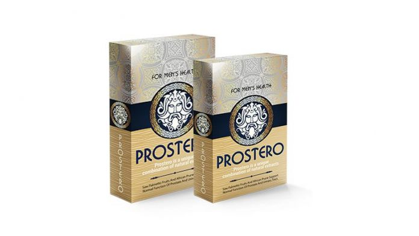
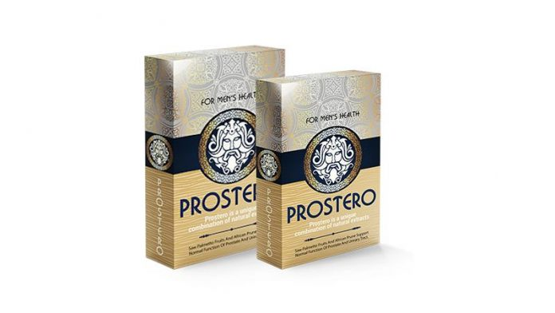

Prostatita acută - cauze, simptome, diagnostic şi tratament - CSID: Ce se întâmplă Doctore?
2020.10.01 22:57

Home News Health Beauty Diet & Sport Lifestyle Medicină de top by Sanador Video Home • Boli / Afecțiuni • Urologie • Prostatita acută cauze, simptome, diagnostic şi tratament
Prostatita acută cauze, simptome, diagnostic şi tratament
Consultant de specialitate: Dr Botezatu Dragos Profesia: Medic specialist Urologie Clinica: Hyperclinica MedLife Genesys, Arad Înapoi la Boli / AfecțiuniProstatita descriere generala
Fac barbatii cistita sau doar femeile? Este o intrebare pe care o aud frecvent. Raspunsul este simplu: DA. Infectiile urinare sunt cele mai frecvente infectii ce ne pot influenta sanatatea si pot afecta oricare organ component al tractului urinar : rinichi, vezica, prostata, uretra etc.
Cistita aste o infectie simpla de tract urinar inferior ce determina o inflamatie a vezicii (din grecescul kystis: basica, vezica + -ita: inflamatie).
Cum si barbatii si femeile au vezica urinara ambii pot face cistita, dar din pacate barbatii pot suferii o infectie de tract urinar inferior mult mai neplacuta si anume prostatita acuta sau cronica.
Ce este prostata? Este un organ vecin vezicii urnare, o glanda a aparatului urogenital masculin, mai exact este zona de intersectie intre calea genitala si cea urinara. Apartine doar barbatilor, femeile nu pot avea boli de prostata. Rolul ei este de a produce o parte din lichidul seminal si de a activa spermatozoizii prin alcalinizarea ejaculatului.
Drept urmare toti barbatii au prostata, de la nastere pana la sfarsitul vietii. Ea este mai mult cunoscuta pentru problemele pe care le creeaza la varsta a 3-a si anume adenomul de prostata si cancerul de prostata.
Revenind la tema noastra, prostatita acuta este o infectie a prostatei si poate reprezenta o problema grava de sanatate.
Variatii: Pentru o clasificare simpla putem spune ca sunt infectii de tract urinar inferior ce implica uretra, prostata, componente ale tractului genital masculin, vezica urinara si infectii urinare inalte ce implica rinichii (pielonefrite).
Cauzele prostatitei acute
Cand vorbim de infectii vorbim de microbi, cel mai frecvent este vorba de microbi din flora digestiva (ex. E. Coli) ce pot coloniza si tractul urinar favorizati fiind de factori generali (constipatie, imunodepresie) sau locali (frig, bai in apa rece etc) sau despre microbi cu transmitere sexuala.
Cai de transmitere: Cum ajung microbii in prostata? Cel mai frecvent pe cale retrograda, adica din mediul exterior patrund pe meatul urinar, urca pe uretra si ajung la prostata. De aici pot progresa mai departe spre vezica – rinichi, sau pe calea genitala spre epididim – testicul. Mai rar are loc insamantarea din mediu intern, adica prin microbi ce intra in sange si se opresc direct in prostata.
Simptome de prostatita acuta
Cum se manifesta? Este mult mai zgomotos si neplacut decat o banala cistita.
Apar fenomene urinare: polachiurie (urinari frecvente de cantitati mici de urina), algurie (durere la urinare: arde, ustura etc), disurie pana la retentie completa de urina (adica urinari dificile cauzate de cresterea in volum a glandei si compresia uretrei, ce poate merge pana la imposibilitatea de a urina), de asemenea apar febra (39-40 grade C), frison, stare generala influentata, dureri musculare etc.
Diagnosticul de prostatita acuta
In general daca simtiti vreunul din simptomele enumerate mai sus este bine sa mergeti la un specialist – adica un urolog – pentru un diagnostic corect.
Consultul clinic al medicului specialist si examenul de urina trebuie asociat si cu o ecografie de tract urinar pentru a exclude sau confirma anumiti factori favorizanti.
Tratamentul pentru prostatita acuta
Tratamentul este unul antibiotic, la care se pot asocia antiinflamatoare si alfa-blocanti (medicamente ce usureaza urinarile, frecvent indicate in caz de adenom de prostata).
Ce este specific este durata lunga de tratament si anume 2-4 saptamani sau chiar 4-6 saptamani in caz de prostatita cronica bacteriana.
De ce dureaza asa mult? Pentru ca prostata este in asa fel organizata incat exista o bariera intre sange si glanda prin care antibioticele trec cu dificultate. Daca nu se respecta tratamentul indicat si durata necesara, atunci sunt riscuri mari de cronicizare si complicatii.
Evolutie, Complicatii
Care sunt complicatiile prostatitei acute? Sunt destul de multe si neplacute, cauzate fie de inflamatia locala ce poate duce la blocarea urinarii sau abces intraprostatic, fie de extinderea infectiei spre tractul urinar superior sau in aparatul genital masculin ducand chiar pana la sepsis (soc infectios al intregului organism).
In concluzie prostatita acuta este o infectie specific masculina, poate aparea la orice varsta, necesita o evaluare corecta facuta de un specialist (urolog) si succesul terapeutic depimde in mare parte de respectarea tratamentului si recomadarilor primite.
Informatiile despre terapiile complementare, plantele medicinale sau remediile naturale, care pot veni in ajutorul bolnavului, nu exclud sau nu inlocuiesc tratamentele medicale, ci le completeaza. SC TITLURI QUALITY S.R.L nu este responsabila pentru aplicarea defectuoasa sau nereusita vreunui tratament. Informatiile de pe site si materialele aferente sunt folosite "asa cum sunt" fara garantii de nici un fel. CSID nu furnizeaza sfaturi medicale similare celor pe care le puteti primi de la medicii care efectueaza consultatia si care vin in contact cu realitatea cazurilor dvs. CSID nu isi propune sa inlocuiasca consultul medical de specialitate, informatia prezentata pe acest site are un caracter informativ. Vezi toate din Boli / Afecțiuni Tags: bărbaţi infectie urinara prostata prostatita Cel mai nou articol Video: Cum te poate îmbolnăvi telefonul mobil Cele mai noi Articole Familie și copii Beneficiile egale ale rolului de părinte, în dezvoltarea copilului Familie și copii Obezitatea la copii și problemele digestive, în creștere în pandemie Familie și copii Pre-eclampsie, eclampsie De ce este foarte important ca gravidele să măsoare constant tensiunea ... Familie și copii Cum să crești un copil sigur pe el? Sfaturi de la cel mai COOL tătic din showbiz Familie și copii Parentingul reflectiv: capacitatea de a-ți înțelege copilulCautare
Introdu cuvântul căutat și apasă ENTER
CalculatorCalorii Calculator
Greutate Calculator
Nutritional Alimente Analize medicale de laborator Boli / Afecțiuni Dicționar medical Medicamente Plante medicinale Produse Gemoterapice și Fitoterapice Semne și simptome Semnificația numelui Vaccinuri *Pentru a căuta intr-o bază de date te rugăm să dai click pe numele bazei și apoi să folosesti boxul de căutare Termeni si conditii de utilizare Politica de confidentialitate Politica de cookies Publicitate Contact Echipa Sitemap Citarea se poate face în limita a 250 de semne. Nici o instituţie sau persoană (site-uri, instituţii mass-media, firme de monitorizare) nu poate reproduce integral scrierile publicistice purtătoare de Drepturi de Autor. Inchide News Health Beauty Diet & Sport Lifestyle Medicină de top by Sanador Video Boli si afectiuni Semne si simptome Dictionar medical Medicamente Plante medicinale Produse Gemoterapice și Fitoterapice Alimente Analize medicale Vaccinuri Căutare Urmarește-ne Termeni si conditii de utilizare Politica de confidentialitate Politica de cookies Publicitate Contact Echipa
- Prostatita - tratament naturist - SanatateCuPlante
- Prostatita: Generalitati, Factori de risc si Tratament
- PROSTATA - Perne pentru hemoroizi, afectiuni anale, dureri ...
- Prostata: cele mai comune boli ale acesteia si ...
- Prostatita acută - cauze, simptome, diagnostic şi ...
- Prostatia cronica - Actinmed
- Adevărul despre Prostero – preț, păreri, forum, prospect ...
- Prostatita | Prostenal
- Prostatita - medicover.ro
- PROSTATITELE - rasfoiesc.com
- Prostatita - tratament naturist - SanatateCuPlante
Prostatita acuta este o infectie a prostatei si poate reprezenta o problema grava de sanatate in randul barbatilor. Prostata este un organ vecin vezicii urnare, o glanda a aparatului urogenital masculin. Mai exact, este zona de intersectie intre calea genitala si cea urinara. Rolul prostatei este de a produce o parte din lichidul seminal si de a activa spermatozoizii prin alcalinizarea ...
- Prostatita: Generalitati, Factori de risc si Tratament
Prostatita subacuta..Intrebare :) » Secțiunea: Forum medical...la un control la medic si mi-a gasit o prostatita subacuta. Mi-a prescris asa :Augmentin 1/12 ore, Flamexin 2 plicuri /zi dupa mese si Tinizol 4 pastile azi si ...ore alte 4.
- PROSTATA - Perne pentru hemoroizi, afectiuni anale, dureri ...
Prostatita - Mecanism fiziopatologic. Prostatita, in special cea care are perioade lungi simptomatice, poate cauza stress, anxietate sau depresie. Barbatii cu prostatita acuta bacteriana au durere de intensitate crescuta si pot necesita spitalizare. Majoritatea se vindeca in urma terapiei cu antibiotice.
- Prostata: cele mai comune boli ale acesteia si ...
Prostatita consta in inflamarea prostatei, adica a glandei situata exact sub vezica urinara a barbatului. Glanda prostata are rolul de a produce lichidul care transporta spermatozoizii. Prostatita cauzeaza adesea disconfort si durere la urinare. Aceasta afectiune poate aparea la orice varsta, insa ...
- Prostatita acută - cauze, simptome, diagnostic şi ...
Prostatita (inflamație sau o infecție a prostatei) este o boală complexă, ce poate avea multe modalități de manifestare. Spre deosebire de majoritatea problemelor legate de prostată, prostatita apare mai frecvent la bărbații tineri și de vârsta a doua.
- Prostatia cronica - Actinmed
Prostatita acuta bacteriana este tratata cu antibiotice, medicamente pentru febra (antipiretice) si durere (antialgige), administrare de fluide si odihna. In cazul in care urinarea nu este posibila sau in cazul in care este necesara terapia intavenoasa cu antibiotice, se indica internarea in spital.
- Adevărul despre Prostero – preț, păreri, forum, prospect ...
Prostatita este o inflamatie a glandei prostatei. Exista multe forme de prostatita, dar vom insista pe doua dintre ele: acute si cronice.Prostatita acuta – este de fapt perioada de debut a afectiunii.Prostatita cronica apare in cazul in care oamenii tolereaza afectiunea fara a apela la medic si in termen de 3-6 luni prostatita intra in faza cronica.
- Prostatita | Prostenal
Prostatita inflamatorie asimptomatica (prostatita histologica) prostatita acuta. etiopatogenie: apare datorita infectarii prostatei cu diversi germeni: Escherichia Coli, Klebsiella, Proteus, Enterobacter, Piocianic, mai rar Stafilococul auriu si Enterococul, Chlamydia sau anaerobi ca diverse specii de Bacterioides.
- Prostatita - medicover.ro
Prostatita cronică bacteriană. Prostatita cronică bacteriană este cauzată tot de infecția bacteriană, dar diferă de prostatita acută bacteriană prin faptul că prostatita cronică bacteriană persistă mai mult de trei luni, iar intervalul de timp în care aceasta se instalează este mai mare. Prostatita cronică bacteriană afectează mai frecvent bărbații între 35 și 50 ani.
- PROSTATITELE - rasfoiesc.com
Prostatita acută bacteriană generează, în schimb, simptome foarte severe, ce au nevoie de îngrijire medicală imediată, pentru a evita apariția complicațiilor. Este important de reținut faptul că există și cazuri în care prostatita nu prezintă nici un fel de simptom. În aceste situații boala poate fi diagnosticată atunci când ...
Prostatita acuta este o infectie a prostatei si poate reprezenta o problema grava de sanatate in randul barbatilor. Prostata este un organ vecin vezicii urnare, o glanda a aparatului urogenital masculin. Mai exact, este zona de intersectie intre calea genitala si cea urinara. Rolul prostatei este de a produce o parte din lichidul seminal si de a activa spermatozoizii prin alcalinizarea ...
Prostatita subacuta..Intrebare :) » Secțiunea: Forum medical...la un control la medic si mi-a gasit o prostatita subacuta. Mi-a prescris asa :Augmentin 1/12 ore, Flamexin 2 plicuri /zi dupa mese si Tinizol 4 pastile azi si ...ore alte 4.
Prostatita - Mecanism fiziopatologic. Prostatita, in special cea care are perioade lungi simptomatice, poate cauza stress, anxietate sau depresie. Barbatii cu prostatita acuta bacteriana au durere de intensitate crescuta si pot necesita spitalizare. Majoritatea se vindeca in urma terapiei cu antibiotice.
Prostatita consta in inflamarea prostatei, adica a glandei situata exact sub vezica urinara a barbatului. Glanda prostata are rolul de a produce lichidul care transporta spermatozoizii. Prostatita cauzeaza adesea disconfort si durere la urinare. Aceasta afectiune poate aparea la orice varsta, insa ...
Prostatita (inflamație sau o infecție a prostatei) este o boală complexă, ce poate avea multe modalități de manifestare. Spre deosebire de majoritatea problemelor legate de prostată, prostatita apare mai frecvent la bărbații tineri și de vârsta a doua.
Prostatita acuta bacteriana este tratata cu antibiotice, medicamente pentru febra (antipiretice) si durere (antialgige), administrare de fluide si odihna. In cazul in care urinarea nu este posibila sau in cazul in care este necesara terapia intavenoasa cu antibiotice, se indica internarea in spital.
Prostatita este o inflamatie a glandei prostatei. Exista multe forme de prostatita, dar vom insista pe doua dintre ele: acute si cronice.Prostatita acuta – este de fapt perioada de debut a afectiunii.Prostatita cronica apare in cazul in care oamenii tolereaza afectiunea fara a apela la medic si in termen de 3-6 luni prostatita intra in faza cronica.
Prostatita inflamatorie asimptomatica (prostatita histologica) prostatita acuta. etiopatogenie: apare datorita infectarii prostatei cu diversi germeni: Escherichia Coli, Klebsiella, Proteus, Enterobacter, Piocianic, mai rar Stafilococul auriu si Enterococul, Chlamydia sau anaerobi ca diverse specii de Bacterioides.
Prostatita cronică bacteriană. Prostatita cronică bacteriană este cauzată tot de infecția bacteriană, dar diferă de prostatita acută bacteriană prin faptul că prostatita cronică bacteriană persistă mai mult de trei luni, iar intervalul de timp în care aceasta se instalează este mai mare. Prostatita cronică bacteriană afectează mai frecvent bărbații între 35 și 50 ani.
Prostatita acută bacteriană generează, în schimb, simptome foarte severe, ce au nevoie de îngrijire medicală imediată, pentru a evita apariția complicațiilor. Este important de reținut faptul că există și cazuri în care prostatita nu prezintă nici un fel de simptom. În aceste situații boala poate fi diagnosticată atunci când ...

 
